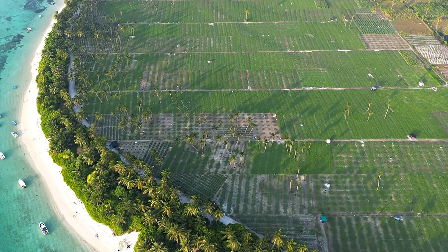
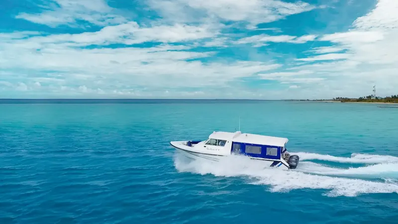
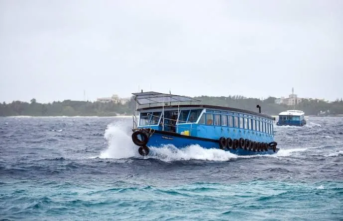

New · fastest
New · fastestSeaplane
~20 minutes
- Operator
- Maldivian (national airline)
- Departs
- Seaplane terminal, Velana Airport
- Arrives
- Thoddoo seaplane platform — a short ride to your guesthouse

One of the Maldives’ agricultural islands, where papaya and watermelon grow beneath the palms and the reef lies just off the beach.


Beyond the turquoise water you’ll find a green landscape of fruit farms, with papaya, watermelon and other local produce growing beneath the palms.
The island has two designated bikini beaches with soft sand, palms and clear water. The coral reef lies close to shore, so you can step into the ocean and explore by snorkelling.
Thoddoo is a lived-in island with small shops, a local health centre and a pharmacy, as well as guesthouses and places to eat.
Wildlife sightings depend on natural conditions and are not guaranteed.
Tap a place to read more.
White sand, palms and a reef just off the shore — each beach has its own mood.
The farming island of the Maldives — fresh fruit, green fields and real island cooking.
Fresh seafood, island fruit and real Maldivian cooking — our guests’ favourite places to eat.
Photos show typical dishes, not the restaurants’ own. Opening times vary — ask us for today’s recommendations.
Thoddoo lies in North Ari Atoll, west of Malé. Choose the journey that suits your time and budget — we book it and meet you on arrival.
New · fastest~20 minutes

Most popular60–90 minutes
Daily departures. Times can change with weather and season — we confirm your boat when you book.

Budget4–5 hours
Depends on sea conditions; we help with connections from the airport.
Fares include taxes and are non-refundable. Schedules can change — we confirm the latest timetable when we book your seats.
Arrange my transferExplore the green side of the Maldives and try fruit grown on Thoddoo.
Enjoy two designated bikini beaches and snorkel near the island’s reef.

Walk or cycle along sandy paths between palms, farms and the village.

Stay in a guesthouse, discover local places to eat and get a feel for everyday life.
Tap a topic for the essentials.
We chose Thoddoo for the turtles and stayed for the people. Dhaain and Julia arranged everything — the beach dinner on our last night was pure magic, and the drone video on the palm road is now our favourite memory.
The manta and nurse shark trip was the highlight of my year. Everything ran on time, the guides were careful and friendly, and the price was honest — exactly what was promised.
My first time in the Maldives and I felt at home from day one. A spotless guesthouse, a quiet bikini beach and fresh papaya every morning. Every message was answered within minutes.
We travelled as a family with two teenagers. The kids still talk about the dolphins and the jetski ride. Great value, safe snorkelling with a guide and a genuinely local feel.
Thoddoo is the green side of the Maldives — farms, palms and the clearest water I have ever seen. We met three turtles on our very first snorkel. Wonderful hosts!
Simple, relaxed and beautifully organised. Essential Escape gave us one great excursion and plenty of time to cycle and swim. I would book exactly the same again.
The beach dinner and the resort day were the perfect balance to local island life. Everything felt personal — not like a package at all. Thank you for a honeymoon we will never forget.
A perfect week. The sunset fishing — then eating the fish we caught, grilled on the beach — was unforgettable. Warm, thoughtful people who care about every detail.
I’m a keen snorkeller and the reef is right off the beach. The half-day trip to the sandbank was stunning, and I came home with brilliant photos and videos.
Affordable, authentic and so beautiful. The guided island tour showed us the real Thoddoo — the farms, the village, the people. ¡Volveremos!